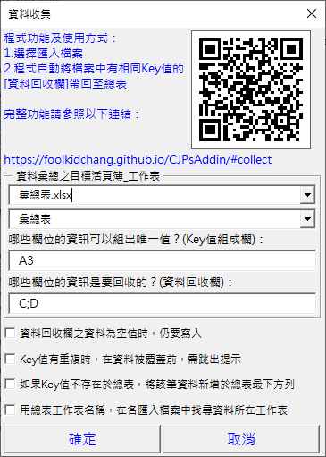

Excel 多個檔案合併到總表：依編號把指定欄位帶回來
把總表拆給各單位填寫，收回十幾個檔案後，要一個一個打開、找到對應的那一列、再貼回總表。CJP 增益集 (CJPsAddin，免費的 Excel VBA Add-in) 的多檔收集，先開好總表，再一次選好幾個匯入檔案，程式會在每個檔案裡找 Key 相同的資料，把指定的欄位帶回總表。可以想成跨檔案的批次 VLOOKUP：Key 和要帶回的欄位都可以是多欄。
適合這些時候用
- 把總表拆給各單位填寫，收回來後要合併回同一張表
- 金額、數量分散在不同部門的檔案，要彙整成一張
- 各門市的月報要彙整成全公司總表
- 各單位處理完案件後清空待辦欄，要同步回總表
資料都在同一個檔案、只是要依對照表或規則補上欄位時，用單檔收集。
Excel 內建的做法
- VLOOKUP／XLOOKUP 跨檔案：每個檔案都要各寫一組公式，檔案一多，公式的範圍和檔名就很難管理；檔案搬了位置，連結還會斷掉
- 手動複製貼上：每個檔案打開、篩出對應的資料、貼回總表，最容易貼錯列
- Power Query：可以合併多個檔案，但要先學會建立查詢，欄位名稱不一致時也要另外調整
用 CJP 增益集：3 個步驟
- 開好總表，在增益集選單點「常用功能二 → 資料收集 → 多檔收集」
- 填 Key值組成欄 和資料回收欄：
- Key 單一欄填
A3，多欄填A;B;3(最後的數字是標題列) - 資料回收欄只寫欄名，例如
C;D，列號沿用 Key 的標題列
- Key 單一欄填
- 按「確定」後，選擇要匯入的檔案 (可以複選)，資料就會帶回總表
匯入檔案是用標題文字找欄位：欄位順序、位置可以和總表不同，但標題文字要一模一樣。執行紀錄會寫在回收欄標題的備註裡。

四個選項
| 選項 | 什麼時候勾 |
|---|---|
| 一、資料回收欄之資料為空值時，仍要寫入 | 空白也是正確答案，例如清空代表已處理 |
| 二、Key值有重複時，在資料被覆蓋前，需跳出提示 | 每個 Key 應該只出現一次，想抓出重複填寫 |
| 三、如果Key值不存在於總表，將該筆資料新增於總表最下方列 | 允許各單位自行新增資料；或總表只留標題，全部資料由匯入檔彙整 |
| 四、用總表工作表名稱，在各匯入檔案中找尋資料所在工作表 | 匯入檔有好幾張工作表，不確定存檔時停在哪一張 |
常見問題
總表的欄位順序和匯入檔案不一樣，可以帶回嗎？
可以。匯入檔案是用標題文字找欄位，位置不同沒關係，但標題文字必須完全一樣。
同一個 Key 在不同檔案都有，會怎樣？
後面讀到的值會蓋掉前面的。不想被默默覆蓋，就勾選項二，覆蓋前會跳出提示。
總表只有標題，可以直接彙整出全部資料嗎？
可以。勾選項三，Key 不在總表的資料會新增在總表最下方 (只寫入 Key 和回收欄，其他欄位留空)。
匯入檔案有好幾張工作表，會讀哪一張？
預設只讀「存檔時停留的工作表」。勾選項四，會改用總表的工作表名稱，在各匯入檔案裡找同名的工作表。
要付費嗎？公司電腦可以裝嗎？
免費。安裝方式和注意事項請看安裝方式。增益集會寫入總表，使用前請先備份。